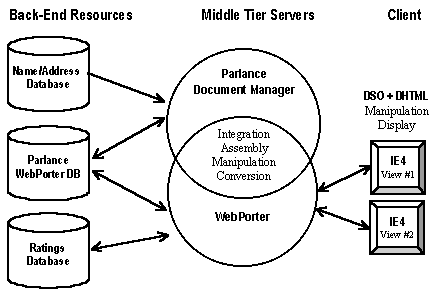

July 28, 1998
The Business Problem
The Role of XML
Solving the Problem with Xyvision's Products and XML
Situation Overview
User Scenario
Behind the Curtain
Information Flow Diagram
The Business Problem
A consumer ratings company that tests thousands of consumer products wants to increase revenue and customer satisfaction by producing an online directory. However, subscribers expect more than just an online version of the printed directory. They want to be able to search for a product by type and see a list of approved products, the manufacturer's name and address, and a description and picture of each product. In addition, they want to know how the product scored in the ratings tests. And furthermore, subscribers expect current data.
None of these goals is achievable with the company's current system. Since this data is stored in a variety of databases and files, retrieving it dynamically in a meaningful way is not possible today.
 Back to top
Back to top
The Role of XML
XML can help solve this problem in several ways.
- XML tagging within a static text file enables the data to be searched for and retrieved much more precisely.
- XML enables structured data from different sources, such as back-end databases, to be easily combined. This data can then be delivered to middle-tier applications for further processing and distribution.
- XLL (Extensible Linking Language) provides links to information stored inside a database and enables that information to be dynamically retrieved on-the-fly.
Back to top
Solving the Problem with Xyvision's Products and XML
Situation Overview
This scenario describes how a consumer products rating company solves its information distribution problems by integrating XML with Parlance Document Manager and WebPorter from Xyvision (http://www.xyvision.com/  ). These products combined with SQL query tools integrate and assemble data from various databases and deliver it as XML data to two different consumers who are presented with different views based on whether or not they are paid subscribers.
). These products combined with SQL query tools integrate and assemble data from various databases and deliver it as XML data to two different consumers who are presented with different views based on whether or not they are paid subscribers.
Back to top
User Scenario
A consumer wants to buy a digital camera. She logs onto the Consumer Products Web site. She selects "search" and checks the non-subscriber box in the pop-up log-in window. She is presented with a search form, where she selects category (Electronics), type (Photographic Equipment), and product (Digital Cameras). She is presented with a list of companies that manufacture "approved" digital cameras.
A Consumer Products subscriber also wants to buy a digital camera. He visits the Consumer Products Web site to see which cameras meet his requirements and have met consumer quality standards. He selects "search" and enters his user name and password in a pop-up window. He is presented with a different online search form, where he selects category (Electronics), type (Photographic Equipment), product (Digital Camera), and price range (under $1000). In the "extra features" field he enters "PC disk storage."
In a few seconds he is presented with a list of "approved" digital cameras that meet his requirements. When he clicks on a camera name, another Web page appears that displays a picture of the camera, a description, and a rating table, showing how the camera scored in various categories (image quality, ease of use, value, etc.). A link on that page takes him to another page that displays the camera manufacturer contact information.
Back to top
Behind the Curtain
- Client software is Microsoft® Internet Explorer 4.0 or later.
- Parlance Document Manager and WebPorter are essentially two parts of the same product that work together to manage data. Both are middle-tier servers, which layer on top of an Oracle or Informix relational database -- in this case, an Oracle database.
- Parlance manages the editorial process, including workflow and version control check-in/out. It also includes a linking tool that creates XLL links between objects inside one database or between databases. For instance, XLL linking is used to establish links between a company name and the data in the Parlance/WebPorter RDBS.
- WebPorter integrates, assembles, and publishes data on the Internet. It works in conjunction with a Web server.
Back-end data sources:
- The data in the Parlance database is a combination of non-XML documents like Word, PDF, graphics, video, etc., and XML components. Each component and document has its own user-defined meta-data, called Property Sheets, which define additional information like product category, product type, price, manufacturer, mime type, version, date, author, and so on. Pictures of the products are stored in the Parlance database as objects. Product description information is edited and stored as an XML text object, which references the graphics.
- The WebPorter database is a synchronized view of sections of the Parlance database -- data that is available for public consumption. When the graphics and descriptions are "published" to WebPorter, a Parlance trigger converts the meta-data for each object to XML meta-data to enhance user searching.
- The Name/Address database contains the most current company names and addresses.
- The Ratings database contains ratings data on each product.
Searching:
- Depending on subscriber/non-subscriber status, a different query form is provided by WebPorter. Using XML queries and an XML-enabled search engine, WebPorter finds and retrieves data such as price, ratings, and so on. It also performs calculations to ensure that the data fits the chosen criteria. In this scenario, it would search within XML elements and use calculations to find all products with prices under $1000 that meet quality standards. WebPorter also combines full text with XML searching to find specified product features. XML makes it possible to search within XML elements to get more precise results.
Integrating, converting, manipulating, delivering:
- When a particular product is selected on the client, WebPorter pulls the correct record from the Ratings database and converts the fielded data into XML on the middle tier via a conversion product like OmniMark or Balise.
- WebPorter then integrates that data on the middle tier with the XML data from the Parlance/WebPorter data sources -- data like product info and graphics. WebPorter then pours the data into a WebPorter template and passes it to the Web server to be delivered to the client.
Display on the client:
- Data is sent to the client as XML. An XML Data Source Object (DSO) binds the XML data to an HTML table using the Internet Explorer 4.0 data binding architecture and displays it with DHTML.
- When the subscriber clicks on the Company Name, the XLL link retrieves the contact information from the Name/Address database. Internet Explorer 4.0 displays it in a separate window.
Back to top
Information Flow Diagram
